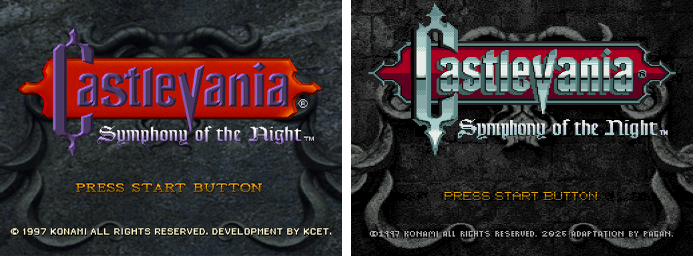
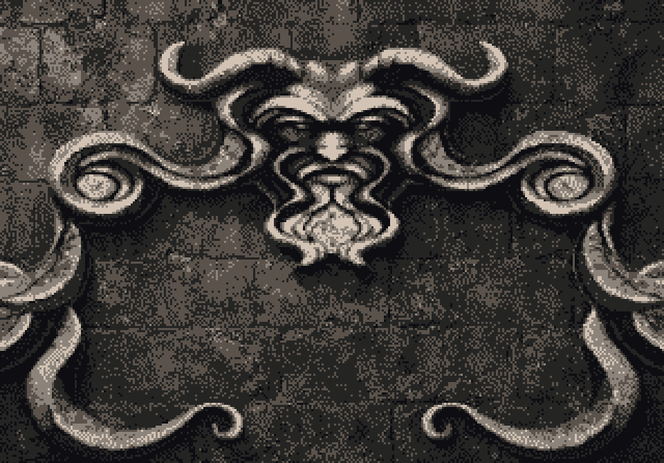
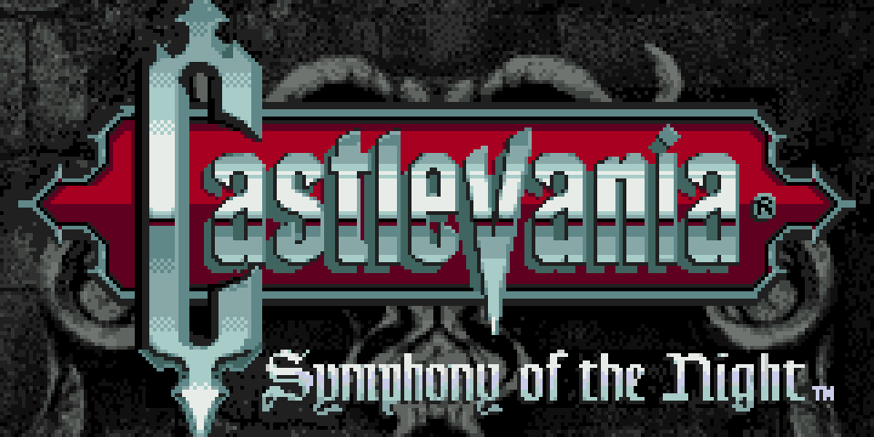
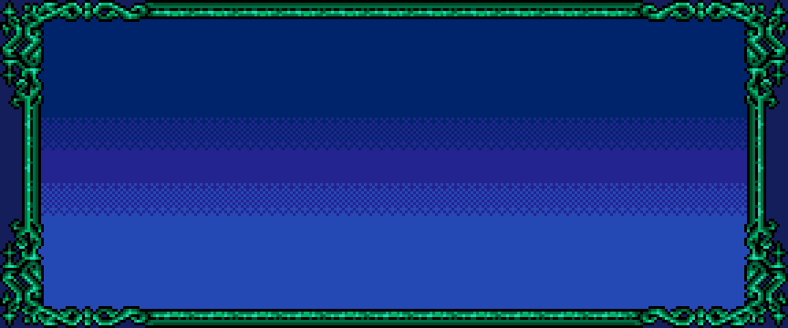
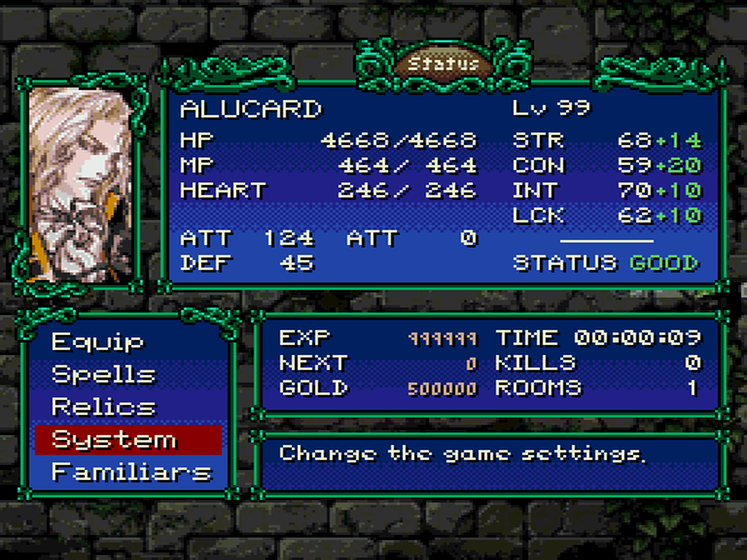

Interlude
What AI can't do in this port
In the last post I showed Pigsy's Symphony of the Night for the Mega Drive. There's one thing about his work I left for today.
Pigsy is a programmer. He writes his game himself. I don't.
People like to say that programming is becoming a worthless skill. I think it's the opposite. As developers lean more and more on AI to write code, and as the money for writing it by hand dries up, the reasons left to keep programming are entirely personal: taste, curiosity, stubbornness, the pleasure of it. The people who keep going for those reasons alone are getting rare, and that makes them more valuable, not less. If one day the companies that own these platforms decide to switch the AI engines off, people like Pigsy will still be able to build things.
What I bring is the other half. I'm not a sprite artist, and I don't draw new sprites from scratch. What I do is take the original game's art and rework it for the Mega Drive, piece by piece, mostly in LibreSprite. That's where my years as an art director in audiovisual production get put to the test. Nothing slips by. Two examples.
The title screen

The background started as a photo of a real stone wall. I crushed its palette down to a handful of grays, cut the carvings out of the original background art and pasted them over the wall, dithered the whole thing, and asked Claude to put it in the Mega Drive's shadow mode, a hardware trick that draws a layer at half brightness.

For the logo I took the Castlevania lettering and the red banner from Bloodlines and repainted them. The "Symphony of the Night" line came out of a straight conversion looking rough, so I fixed it by hand, pixel by pixel, and gave it a drop shadow. The small print at the bottom uses a new mini font I made for it.

The menu frames
In the last two posts I wrote about the plain pause menu that shipped because the team ran out of time. The ornate frames it never got were already in the game. The PlayStation's file select screen has these green ones.

They were cut apart into 8 by 8 pixel pieces, which is how the Mega Drive builds a screen, and reassembled around every window of the new pause menu. The stone wall from the title screen came along as the background.

Even this kind of adaptation is still not something AI is good at. Pixel art runs on abstract symbolism, and on a kind of synesthetic cognition that ties our phylogenetic makeup (every biological sensor we have, tuned to an environment) to arbitrarily applicable relational responding. That last one is complicated; I actually have a bachelor's degree in Psychology and a postgraduate degree in Behavior Analysis. Machines are still very far from simulating any of that in a way that works.
The same goes for arranging music in a tracker, the kind of program game music is written in. Most of Michiru Yamane's soundtrack exists only as recorded audio: there is no sequenced version of it to convert. Between the waveform on the original recording and the notes in a tracker there is a thick layer of interpretation, and for the same reasons as pixel art (symbolism, phylogeny, relational responding), it can't be automated. I imagine Pigsy is running into the same wall with FM music. There are very few resources for it, and the work is colossal.
So go follow Pigsy: YouTube and X. People like him are the ones keeping the craft alive.